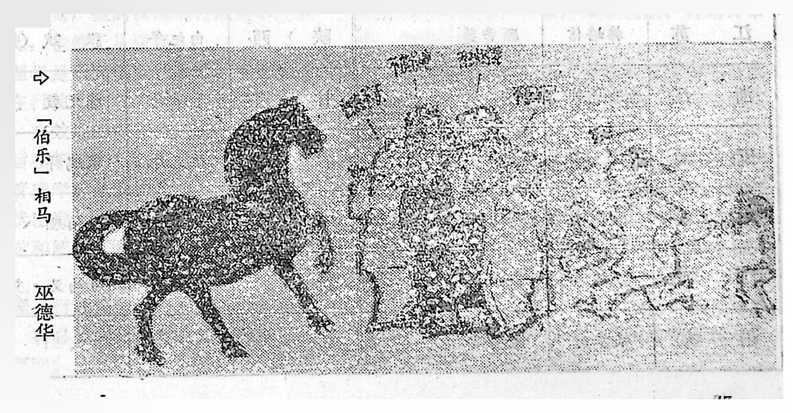

巫德华 《人事》1985年第2期（总第2期），第47页
「伯乐」相马
“Bole” Judges a Horse
- Text in the drawing
- (labels on the figures, illegible)
(labels on the figures; illegible) - Description
- A fine horse stands at left while the self-styled judge of horses and a crowd of labeled figures look elsewhere. The coarse halftone leaves the labels unreadable.
- Note
- Bole, the legendary judge of horses, is the standard figure for someone who can spot talent; the quotation marks make him a false one.
- Artist
- Wu Dehua 巫德华
- Published in
- 《人事》1985年第2期（总第2期）, p. 47
- Themes
- Talent and its neglect · Fable, legend and history

Cite
Wu Dehua, “「伯乐」相马” [“Bole” Judges a Horse], Renshi (Personnel) 《人事》, 1985, no. 2, p. 47.